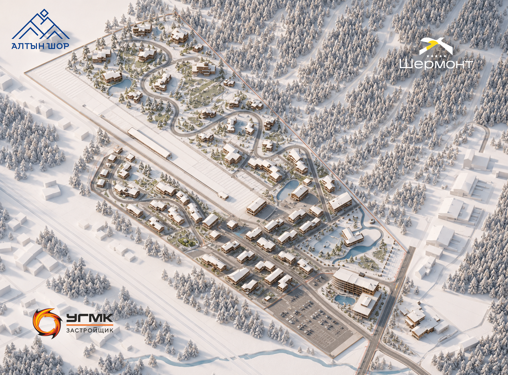
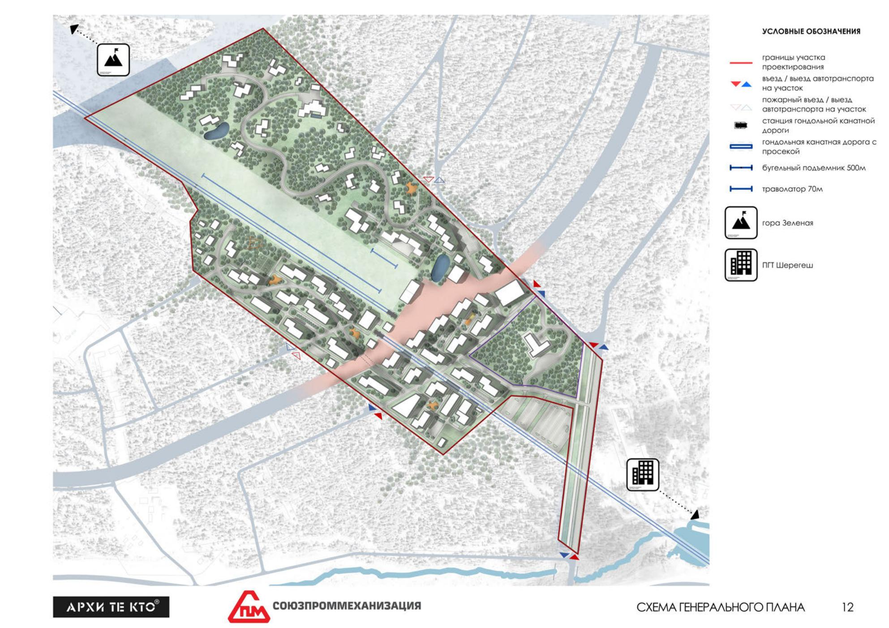

Шерегеш · Горная Шория
Алтын Шор
Алтын Шор — это когда снег скрипит, солнце слепит,
а внизу спит Горная Шория! Шерегеш, который вы искали!
О Курорте
Шерегеш — динамично развивающийся всесезонный курорт!
Зимой гостей встречает море пушистого снега, более 61 000 метров трасс и атмосфера апре-ски у подножия горы.
А летом – возможность отправиться на сплав по горным рекам, расслабиться у бассейна или исследовать Горную Шорию.
До курорта можно добраться из аэропортов Кемерова или Новокузнецка. А к 2030 году планируется открытие аэропорта в Шерегеше.
О Проекте
Сектор F — последняя свободная земля на склоне
Наша задача: превратить её в эталон горного гостеприимства.
Что делаем:
· Отели, рождённые рельефом. Не спорим с горами — продолжаем их.
· Пешеходная среда. Машины внизу, люди наверху. На лыжах от двери.
· Тот самый золотой час. Место, где рассвет — личное событие каждого гостя.
Алтын Шор. Шерегеш, который мы строим. В гармонии с горами. В партнёрстве с человеком.
Карта Шерегеша и схемы проекта
Интерактивная карта с основными объектами курорта


Реабилитационный центр для участников СВО
Реабилитационный центр «Алтын Шор» – это строящийся объект в составе нового туристического кластера у подножия горы Зелёная. Его открытие запланировано на 2038 год.
Основное заявленное направление – медико-социальная реабилитация, в первую очередь для ветеранов боевых действий, а также семейный отдых.
Сам реабилитационный центр будет рассчитан на 100 мест для стационарного пребывания.
Партнерам
Бизнес и инвестиции
Раздел для заявок на получение инвестиционных предложений
- свободные участки и очереди развития;
- условия партнерства;
- контакты управляющей команды.